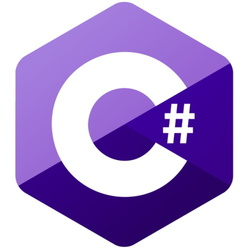

I enjoy a broad range of computer science and mathematical activities including: data analytics, web development, database management, and software development.

Firefly AR is a Toronto based start up where I had the pleasure of working at from April 2020 to August 2020. At Firefly AR I worked in a small development team working on their application named Firefly which is a mobile AR puzzle solving AR game. While working here I gained experience working in both Android and iOS environments and learned brand new API and development libraries to implement in the application. In our small development team we had an agile work environment where weekly sprints occured and Jira was used for issue and progress tracking. While at Firefly AR I developed a reusable C# game physics and mechanics toolkit and base game functionality. As well, I was given the opportunity to learn 3D modelling and UX design.
Over the 2019 summer I worked as a STEM counsellor at St. Andrew's College Summmer Camp (SAC Summer Camp). While working there I instructed classes of twenty campers aged from ten to seventeen. I taught Python and C++ programming fundamentals and this allowed me to strengthen my communication and problem solving skills. Working at SAC Summer Camp taught me how to take big complicated concepts and break them down into small understandable pieces for campers to understand, and I continue to apply this today when problem solving.